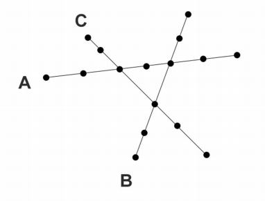

Solve using javascript
We have 3 trains moving on different railways from one station to another with the same speed, every train has assigned different number of people. They need to circulate from side to side on their own railway and in case 2 trains or more arrive to a cross at the same time, the one with the higher number of people should pass first. The problem consist in making the trains circulate on their railways avoiding collisions and falling the priority rules.
Note - The space between stations are the same.
Note - The starting point of every train should be passed in a init function.

SCRIPT